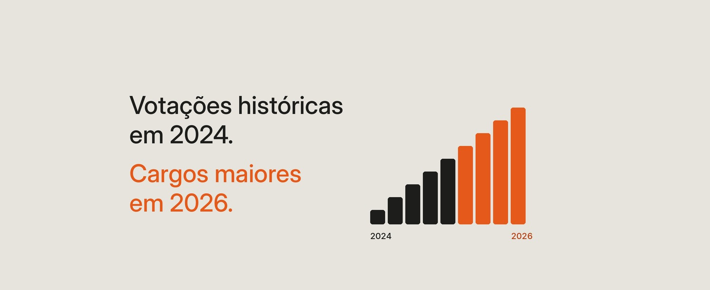

Campanhas eleitorais
- Copywriting
- Estratégia de conteúdo
- Peças offline
- Comunicação eleitoral

Ponto de partida
Em 2024, a Rumon Marketing, responsável pela estratégia de comunicação das campanhas, me contratou como copywriter dedicado para dar forma, tom e consistência ao que os candidatos diziam todos os dias. Os nomes eram o Professor Rodolfo Braga, em Várzea Paulista, e a vereadora Sandra Tadeu, na capital paulista.
Em 2026, voltei à Rumon, agora como diretor de criação. Sandra Tadeu e João Paulo, vice do Professor Rodolfo, disputaram cargos maiores: uma vaga na Câmara dos Deputados e outra na Assembleia Legislativa.
Além deles, o trabalho passou por outras candidaturas, entre elas Tenente Bahia e Adriana Roncada.
O que fiz
- Textos estratégicos diários, ajustados a públicos e canais diferentes: redes sociais, roteiros de vídeo, anúncios e peças impressas.
- Criação de peças, principalmente offline, pensadas para o contato direto com o eleitor.
- Narrativas de autoridade e proximidade, reforçando o vínculo de cada candidato com a comunidade.
- Argumentos claros para desarmar objeções, destacar conquistas e estimular o boca a boca positivo.
- Coordenação das mensagens-chave para manter a coerência de toda a comunicação.
Resultados
mais de 90%
dos votos válidos para Rodolfo Braga em Várzea Paulista, em 2024.
74.511
votos para Sandra Tadeu em 2024, contra 28.464 em 2020: a maior votação da carreira.
Deputada federal
Sandra Tadeu, eleita em 2026.
76.371
votos para João Paulo, eleito deputado estadual em 2026.
Próximo projeto
Gruta da Lapa Doce